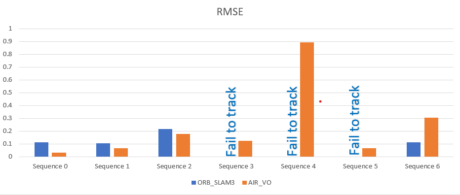

Evaluation of visual odometry
Evaluation Method
Based of ChArUco board, we can caluate the relative pose of the camera relative to the static board. This calculation is accurate enough to measure the drift and error in visual odometry algorithms.
ChArUco board are seen at the start and the end of testing videos, i.e. we will be able to calculate the error only when the ChArUco board is seen.
Evaluation metrics
- Fail / Sucess: to measure the robustness of the odometry.
- MAX_ERROR: Maximim error along the trajectory.
- MEAN_ERROR: MEAN Error along the trajectory.
- RMSE: Root Mean Square Error of the trajectory.
Visual odometry /SLAM systems
- ORB-SLAM3 odom (Stereo, Loop closing is OFF)
- Visual Odometry: (Our visual odometry based on AIR-VO, with SP and SG)
Evaluation on Stereo Sequences
| Sequence | Length (s) | ORB-SLAM3 odom | AIR-VO |
|---|---|---|---|
| Sequence 0 | 34 | 0.114 | 0.031 |
| Sequence 1 | 32 | 0.104 | 0.068 |
| Sequence 2 | 33 | 0.217 | 0.177 |
| Sequence 3 | 62 | Fail | 0.124 |
| Sequence 4 | 76 | Fail | 0.893 |
| Sequence 5 | 21 | Fail | 0.067 |
| Sequence 6 | 32 | 0.114 | 0.304 |

===================================================================================
| Sequence | Length (s) | ORB-SLAM3 odom | AIR-VO |
|---|---|---|---|
| Sequence 0 | 34 | 1.11 | 0.43 |
| Sequence 1 | 32 | 1.02 | 0.64 |
| Sequence 2 | 33 | 2.44 | 1.94 |
| Sequence 3 | 62 | Fail | 1.36 |
| Sequence 4 | 76 | Fail | 11.19 |
| Sequence 5 | 21 | Fail | 0.52 |
| Sequence 6 | 32 | 1.01 | 2.60 |
===================================================================================
| Sequence | Length (s) | ORB-SLAM3 odom | AIR-VO |
|---|---|---|---|
| Sequence 0 | 34 | 0.019 | 0.007 |
| Sequence 1 | 32 | 0.015 | 0.0132 |
| Sequence 2 | 33 | 0.025 | 0.024 |
| Sequence 3 | 62 | Fail | 0.0217 |
| Sequence 4 | 76 | Fail | 0.077 |
| Sequence 5 | 21 | Fail | 0.017 |
| Sequence 6 | 32 | 0.0177 | 0.041 |
===================================================================================
Plots and trajectories from the sequences:
===================================================================================
===================================================================================
Notes on the results
- Although, ORB-SLAM3 fails tracking in most cases, although ORB-SLAM3 has a lot of features that can be inherited into AIR-VO as loop closing, and old points regonition.
- ORB-SLAM3 is scalable to other sensors and configurations. Their code is pretty clean, but would be hard to change core components of it, as the feature extractor.
- On the other hand, AIR-VO is only an odometry but performs robustly on these sequences, and in presense of challenges in visual odometry.
- We refactored the code of AIR-VO to support mono tracking, and even multi Camera setting (In progress) with fixed bugs.
Evaluation on Monocular Sequences
In general, Monocular tracking is less robust than stereo tracking. On these sequences, ORB-SLAM3 on Monocular settings fails to track on all sequences. AIR_VO doesn’t support mono tracking, but we modified the code so that we have monocular tracking on it. We have tested our modified VO on grabes sequences outdoors and on EuRoC benchmark, It showed acceptable performance. But on these sequence we face a scale drift issue on rotations (Debugging in progress!).